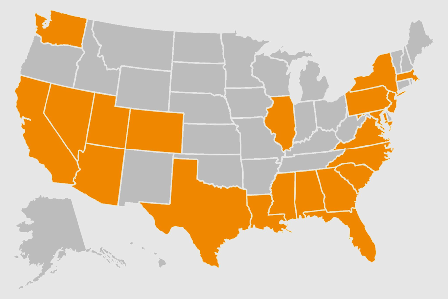

Utazások
Rendkívül szerencsésnek mondhatom magamat, mivel a 13 hónap alatt 21 államba sikerült eljutnom az 50-ből, valamint még Kanada két provinciájában is jártam.
Mivel Washington DC-ben laktam, a Keleti-partot nem volt nehéz beutaznom. Az összes jelentősebb nagyvárost sikerült meglátogatnom. Voltam Bostonban, New Yorkban, Philadelphiában, Baltimore-ban, de a déli városok se maradtak ki: Savannah, Charleston, Jacksonville, Miami, Tampa. Az egyetlen lényeges talán, amit kihagytam az Atlanta.
Többször csináltam hosszabb autós túrákat is. Az egyik ilyen túrám délre vezetett Floridába, egészen Key Westig, majd visszafelé eljutottam New Orleans-ba is. Egy másik alkalommal Torontóba mentem, és útközben megnéztem a Niagara-vízesést is. Egyszer pedig a coloradói Denverből elindulva átvágtam a Sziklás-hegységen, majd bejártam Utah síkságait.
Az utolsó hónapomat a Nyugati-parton töltöttem, szintén egy autós túrán. Las Vegasból indulva elmentem a Grand Canyonhoz és a Monument Valley-hez. Aztán leautóztam San Diegóba, majd fel Los Angelesbe. Továbbmenve eljutottam San Franciscóba, majd Sacramentóba is. Onnan a Yosemite Nemzeti Park következett. Ezután átvonatoztam Salt Lake Citybe, ahonnan repülővel mentem tovább a texasi Austinba. Az utam San Antonióban ért véget.
Egy alkalommal átrepültem a kontinenst egészen Vanquverig, ahol egy ismerősöm lakik. Vele bejártam Brit Kolumbiát, ami egyszerűen csodaszép, majd visszatérve az Egyesült Államokba Seattle-t is felfedeztem.
Persze voltak rövidebb útjaim is, egy-két naposak, így jutottam el például Chicagóba vagy Buffalóba. Még most is eszméletlen belegondolni, hogy mindezt 13 hónap alatt hoztam össze úgy, hogy emellett dolgoztam is. Úgy tapasztaltam, hogy az USA rendkívül változatos és különleges, ezért mindenkinek ajánlom, hogy ha teheti, szervezzen magának túrákat a felfedezésére, nem fogja megbánni. A helyeket, amelyeket bejártam, bátran ajánlom mindenkinek. Kedvcsinálónak nézzétek meg a képeket, amiket az ott töltött időm alatt készítettem.
 Az általam meglátogatott államok listája:
- Alabama
- Arizona
- California
- Colorado
- Florida
- Georgia
- Illinois
- Louisiana
- Maryland
- Massachusetts
- Mississippi
- Nevada
- New Jersey
- New York
- North Carolina
- Pennsylvania
- South Carolina
- Texas
- Utah
- Virginia
- Washington